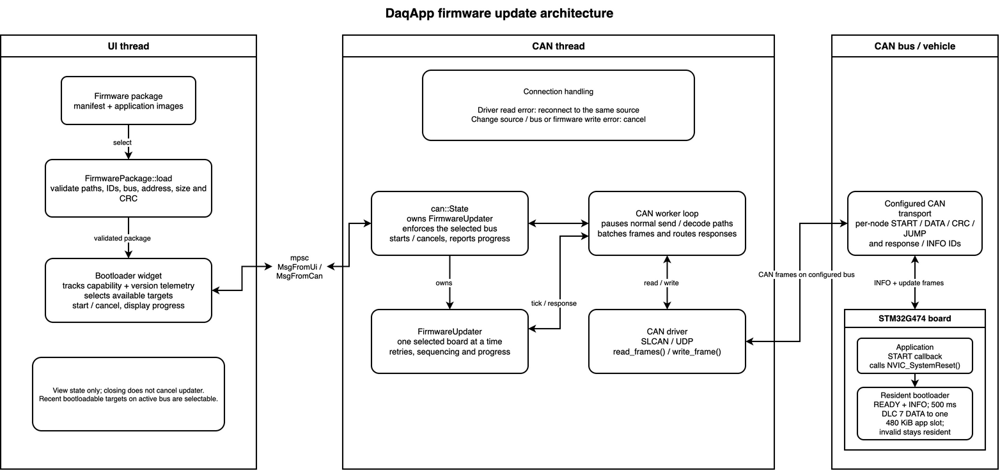
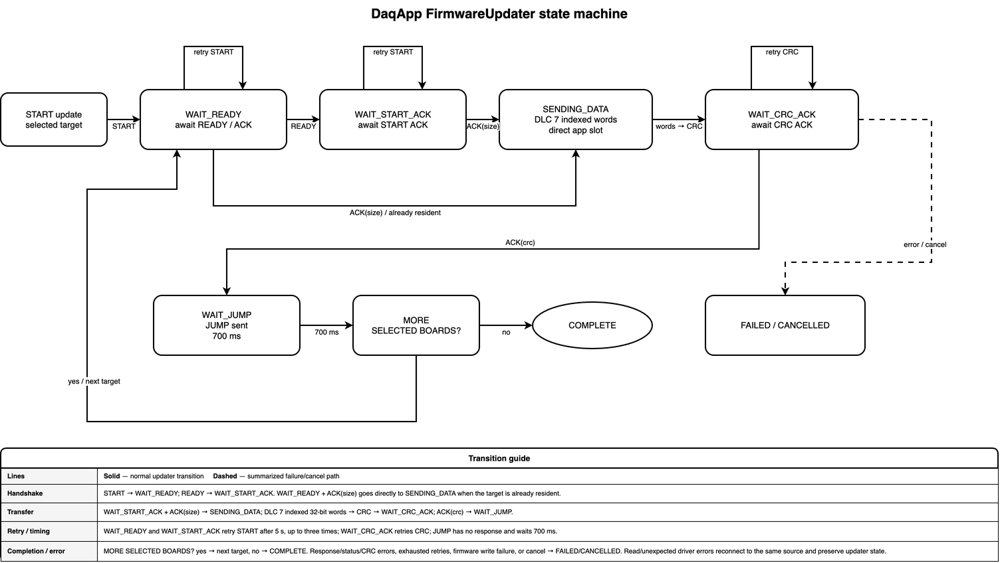

- Generated by
 1.12.0
1.12.0
|
PER Firmware
|
This guide covers firmware updates from DaqApp. See the resident G4 bootloader guide for architecture, protocol, flash layout, and recovery.
The updater supports the six STM32G474 VCAN nodes: main_module, dashboard, torque_vector, a_box, front_driveline, and rear_driveline.
From the repository root, build the firmware and package:
The command writes firmware/output/manifest.json, firmware/output/firmware_<git-ref>.tar.gz, and resident images under firmware/output/bootloader_<NODE>/. Flash the matching bootloader_<NODE>.bin before the first application update. The archive contains application payloads; it does not replace resident bootloaders.
firmware/output/manifest.json or firmware_*.tar.gz.complete; verify telemetry.Selected boards update sequentially. Front and rear driveline are separate nodes.


DaqApp sends START to reset a running application into the resident bootloader. After READY, it erases, transfers, validates, and hands off the image. A target already in the resident bootloader starts directly. See the resident guide for protocol and flash details.
Cancel stops DaqApp's host state machine but cannot undo target writes. Retry a cancelled or failed board before vehicle use. The protocol has no authentication or rollback; use stable power and a trusted bus.